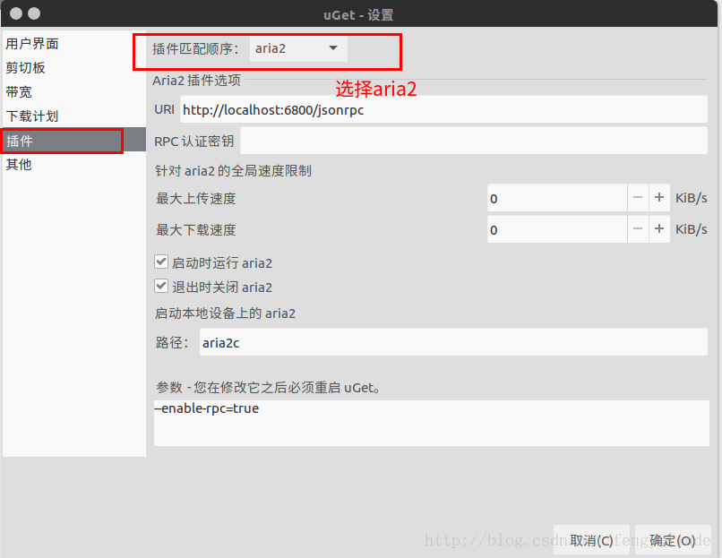

Ubuntu下常用工具软件配置安装
终端打开软件，不占用终端的方法是在命令后面加&
sudo matlab &
一、安装高速下载工具
uGet：是一款图形化界面软件， 支持队列下载和恢复下载的功能。uGet官网 aira2：是一个命令行下载工具，使用不方便，需要配合其他图形界面的下载软件使用。其下载原理类似于Windows上的迅雷，通过搜索资源、为己所用，而不是仅仅从原始地址这单一资源处下载。
uGet采用aria2作为后端，安装aria2插件后可与其进行交互。支持的下载协议包括：HTTP，HTTPS，FTP，BitTorrent和Metalink。
作者：Geroff 来源：CSDN 原文：https://blog.csdn.net/fengyulinde/article/details/78309314 版权声明：本文为博主原创文章，转载请附上博文链接！
1.1 安装步骤
- 安装 uget aria2
sudo add-apt-repository ppa:plushuang-tw/uget-stable
sudo apt update
sudo apt install uget aria2
1.2卸载
- 1.如果要移除uGet和aria2，可执行如下命令
sudo apt-get remove --purge uget aria2
- 2.移除相应ppa，执行如下步骤
先安装ppa-purge
sudo apt-get install ppa-purge
接着删除相应ppa
sudo ppa-purge ppa:plushuang-tw/uget-stable
1.3 uGet设置
如图界面选择插件--> aria2即可，更多的帮助请在终端中输入，aria2c -h即可看到。
